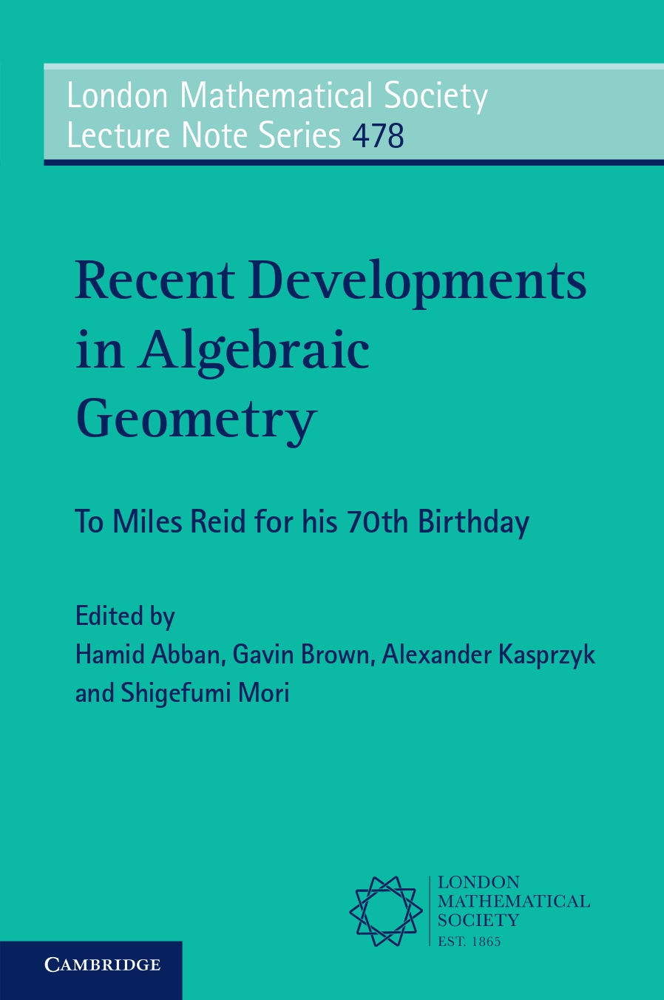

Recent Developments in Algebraic Geometry

Recent Developments in Algebraic Geometry, Hamid Abban, Gavin Brown, Alexander Kasprzyk, and Shigefumi Mori (eds), London Mathematical Society Lecture Note Series, 478, Cambridge University Press, 2022.
Contents
-
On Stable Cohomology of Central Extensions of Elementary Abelian Groups, Fedor Bogomolov, Christian Böhning, and Alena Pirutka, 4-19.[arXiv]
-
On Projective 3-Folds of General Type with pg = 2, Meng Chen, Yong Hu, and Matteo Penegini, 20-65.
-
15-Nodal Quartic Surfaces. Part I: Quintic del Pezzo Surfaces and Congruences of Lines in P3, Igor V. Dolgachev, 66-115.[arXiv]
-
Mori Flips, Cluster Algebras and Diptych Varieties Without Unprojection, Tom Ducat, 116-149.
-
The Mirror of the Cubic Surface, Mark Gross, Paul Hacking, Sean Keel, and Bernd Siebert, 150-182.[arXiv]
-
Semi-Orthogonal Decomposition of a Derived Category of a 3-Fold With an Ordinary Double Point, Yujiro Kawamata, 183-215.[arXiv]
-
Duality and Normalization, Variations on a Theme of Serre and Reid, János Kollár, 216-252.[arXiv]
-
Rationality of Q-Fano Threefolds of Large Fano Index, Yuri Prokhorov, 253-274.[arXiv]
-
An Exceptional Locus in the Perfect Compactification of Ag, N. I. Shepherd-Barron, 275-295.[arXiv]
-
Variation of Stable Birational Types of Hypersurfaces, Evgeny Shinder, 296-313.[arXiv]
-
Triangle Varieties and Surface Decomposition of Hyper-Kähler Manifolds, Claire Voisin, 314-356.[arXiv]